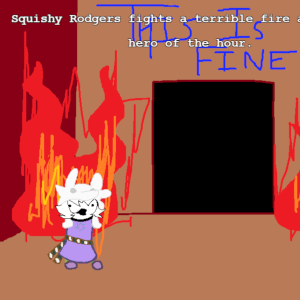
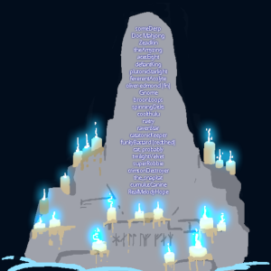
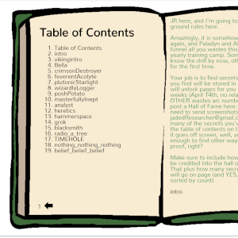

List of April Puzzles
[???] (2017)
Actually for 4/13 (a date we no longer speak of) in year 0, this was FarragoFiction's First Puzzle, where people were challenged to figure out the password to [???] in time to be included in the Hall of Fame. The reward continues to be easter eggs and secrets for SBURBSim.

LifeSim (2018)
AprilFools fell on Easter and seemed a perfect time to send people on an easter egg hunt after "destroying" sburbsim in a sauce filled rage. LifeSim was my baby and people weren't paying it enough attention. People were challenged to collect easter eggs spread all throughout farragofiction (including a few places i'd only mentioned in passing in newsposts), load them into lifesim as scene cards, and then report back on how many they found.

April ARG (2019)
Nearly did nothing, but realized that the system to forward people to LifeSim on AprilFools was still in place and that would be confusing. Temporarily made a shitty clone of "Who is Shogun" in its place that lead people on a real time puzzle where I taunted and challenged them in conjunction with a mysterious tumblr account called odinsRazor. Only the dregs of this puzzle remains.

VikingTimeline (2020)
On AprilFools, SBURBSim forwarded people to YN's mod of sburbsim from one of their character's points of view, and I scattered pages of a "Viking Book" into it. Similar to LifeSim, people were required to find various hidden entires for it, but there were three additional tiers of difficulty to make up for the fact that books were only in a single sim.